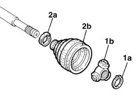

2710A52 differential end sliding joint (one) l/h or r/h - r + r with drive shaft removed - includes boot replacement
- Path
- Procedures > 27 AXLE > 2710 FRONT AXLE > 2710A drive shafts and joints > 2710A52 differential end sliding joint (one) l/h or r/h - r + r with drive shaft removed - includes boot replacement
- Kind
- repair procedure (removal / refitting; the operation number is the code)
- Applies to
- engines: 1.2 8v, 1.2 16v, 1.4 16v; all production periods
- Interactive page
- https://sloeber94.github.io/elrnDB-lYpsln/en/#/2429143
Applies to: engines: 1.2 8v, 1.2 16v, 1.4 16v; all production periods
 Removing
Removing
 Refitting
RefittingPlace the driveshaft in a vice fitted with protective jaws.
1. Remove the circlip (1a) and release the three lobe joint (1b) from the driveshaft.
2. Loosen the band (2a) and remove the protective boot (2b).

Applies to: engines: 1.2 8v, 1.2 16v, 1.4 16v; all production periods
Refitting
RemovingPlace the protective boot in ist housing and secure it using the band.
Place the three lobe joint in its housing on the driveshaft and secure it using the circlip.
Fill the protective boot and bearing with the recommended grease.
 | Type | Component | Name | Qty. |
|---|---|---|---|---|
- | Grease (g) | DRIVESHAFT SLIDING COUPLING | TUTELA MRM ZERO | - |
Remove the drive shaft from the vice.